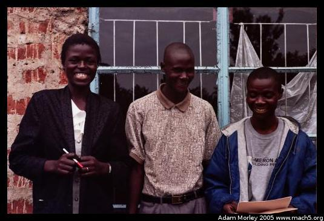

These photos are in no particular order -- the order is based on the order I took the film to the photo store. Most of these people are either members of Reuben's family or ICODEI employees. I lucked out -- one of my high school friends ended up volunteering with ICODEI and was kind enough to take copies of all these photos back to Kenya for me. Thanks Peilan!
Edwin, one of Reuben's sons. He lived in the hut next door, and went away to boarding school right before I left.

Moses, the lab tech for ICODEI. He travels with the mobile clinics and does typhoid and malaria diagnosis. You can see his crank-powered centrifuge for spinning down blood samples (background), and his microscope. Both are used to determine if a patient has malaria. I once went and had lunch at his house, where I had these little fish that are eaten whole. Obviously somewhat different to look at, but fairly tasty. Lots of calcium --- the bones are tiny.
Emily, a live-in family friend who prepares many of the meals. She can be hilarious, and once dissected a chicken, showing Wendi all the different parts of a chicken's anatomy.
Kristen, Peter (Michael) and Moses. Kristen is a nurse for ICODEI's mobile clinic, and Peter drives the big green van.
Peter's house when I went to visit. It was almost brand new, as they were still spreading the floor.
Peter with his two sons.
Peter, Francis (Peter's wife, on the right) and the whole family outside their house. I seem to remember the woman in the middle was Peter's niece.
Some neighborhood boys who came by saying, "Take my camera! Take my camera!"
Wendi looking up while Pauline writes her address.
Joshua, one of Betty's sons.
Kids being kids.
One of my favorite photos from Kenya. These are Joseph's kids when we stopped to meet them on the way back from some agricultural visits
Stallone retrieving water from the well. An inordinate amount of time is spent retrieving water from the well -- for laundry, showers, cooking, the list goes on. You don't waste water when you have to haul it up twenty five feet, bucket by bucket.
Stallone decided to try and grow pineapples, by planting the stalks of the pineapples we'd already eaten.
Maurice filters water with the water purifier. One of the problems with the device is the chlorine levels have to be carefully monitored (with chemicals and a pool tester) so the water is not over-chlorinated. One can also use a recent product called WaterGuard (ads were *all over* rural Kenya), which is diluted sodium hypochlorite (aka bleach) instead of the device. This kills common microbes that cause disease, but makes the water taste chlorinated which many Kenyans don't like. It also costs money, which many Kenyans in western Kenya do not have. Chlorine treatment is a common method for purifying water all over the world. However, chlorine treatment can harm water-borne animals if too much chlorine is present in waste water. This is why waste water treatment plants monitor their chlorine levels carefully. Newer waste water treatment plants often use alternative methods for drinking water (such as UV light) treatment.
Joseph, ICODEI's administrator and book-keeper.
Jenn, one of the HIV/AIDS translators.
Rose, Betty's sister. She came to the farm during one of her breaks from school. I took an interest in her studies as she is studying information technology, the field in which I currently work. She hopes to one day start her own business.
It's laundry day. Women do all the laundry, and there is a *lot* of it. You can see Rose and Emily washing piles of clothes.
Peter retrieves water from the well to wash the ICODEI vehicles.
Margaret, who helps make lunch for the school. Her daughter attends the school run by ICODEI.
Nick, one of the drivers for ICODEI.
Some of the kids from the school. They wear uniforms, like in many other countries. School in Kenya is now free, but the classes usually have a hundred or more students in a class, with three and sometimes four students per desk. Parents must pay for uniforms and school supplies. ICODEI runs a subsidized private school for the area around Kabula. At this school, class sizes are small.
As you can see, the schoolyard looks much more lively when school is in session. When I arrived on the farm, I wondered why it was so quiet and empty. I quickly learned (when school started up a few days later, and Pauline, Joshua and Wendi returned) that it was not normally as quiet!
Mama Betty on her way to teach at the school.
Brooke and Edwin playing basketball (no hoop...) in the yard. Look at how defined the shadows are from the ball --- it is *really* sunny near the equator!
One of the ICODEI programs teaches Kenyans to teach other Kenyans about HIV and AIDS. This program uses a seventy page manual about HIV and AIDS written by a Canadian volunteer. For the longest time, the manual has only been available in English. This often makes the science portion especially difficult to understand, as English comprehension is good but not great (probably because it's an average Kenyan's third language). We bought some Swahili-English and English-Swahili dictionaries and five people worked to translate the manual from English to Swahili. I remember the day I saw the first draft of the re-typed manual. I had *no* idea what most of it meant (I only know a few Swahili words), but it was neat to see a local-language HIV/AIDS manual. The manual had to be translated by hand, to paper, edited, revised, and then retyped. In order to use the computer at ICODEI, we needed diesel fuel. Diesel fuel costs about $4/gallon, and it turns out to be cheaper to have someone in Bungoma type the manual back up because the power is on more regularly.
Edwin playing ball. Look at that shadow!
Stallone at night, looking like a deer in headlights (or perhaps antelope?).
Stallone in front of his hut.

Give a kid a camera, and you get some funny photos.
Wendi cuts up some onions.
Chicken was only served twice in the entire time I was in Kenya. I don't eat meat so I didn't mind the lack of meat --- Kenyans eat beans, corn, kale, and rice which is quite similar to what I normally eat. One night, while making peas and Irish potatoes, someone decided it was time for chicken. So Donna got up, grabbed a chicken, and headed outside.
And a few moments later, the chicken was dead. Eating meat is quite different when it goes from a fluffy bird running around the kitchen to a dead one on the ground outside which then must be plucked, cleaned and cooked.
Donna found it quite amusing how I went, "Auck!" We returned from outside with the chicken in a bucket. A few moments later, the bucket tipped over and the chicken began running around the room --- just like the saying goes, "A chicken with it's head cut off." Emily caught the chicken, took it outside, and finished the job. When you want chicken in rural Kenya, you have to catch one and kill it first. I think meat consumption would be much lower in the developed world if we had to kill the animal before eating it.
After Emily returned with the now fully-dead chicken, the feathers were removed, the skin cleaned, and the chicken cut up. Emily proceeded to give the kids an anatomy lesson (crop, gizzard, heart, lungs, intestines, etc.) and even bisected some organs for the kids to see what they looked like inside. If you ever happen to have a chicken, you can find out if they've eaten recently by squeezing their crop. If they've eaten recently, you'll feel what they've eaten. This is how one knows if a recently purchased chicken might need to eat something. As one might immediately ask, "What about bird flu?" Bird flu has been discovered in Africa, first in Nigeria. Obviously, bird flu in the rural areas of Africa is a potential nightmare --- public health is quite challenging already, and most birds live close to the home.
Edwin by lantern light. Sometimes, the generator would be broken, or out of diesel, so we would eat by lanterns and candles. The generator was put in by some volunteers from Rice University. It supplies power for the medical clinic and the administrative building, as well as lights in a few of the buildings of the compound.
Adam can be reached at adam dot morley at gmail dot com